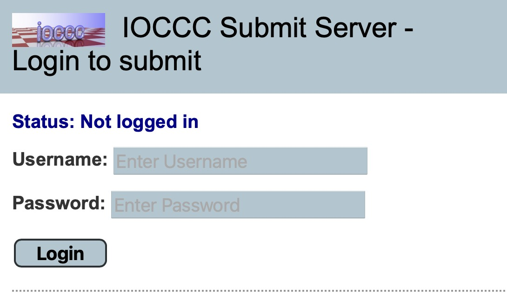
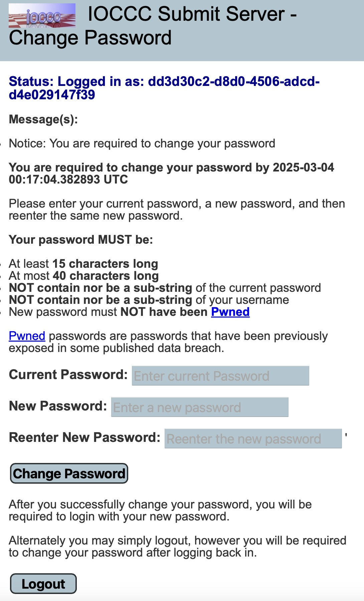
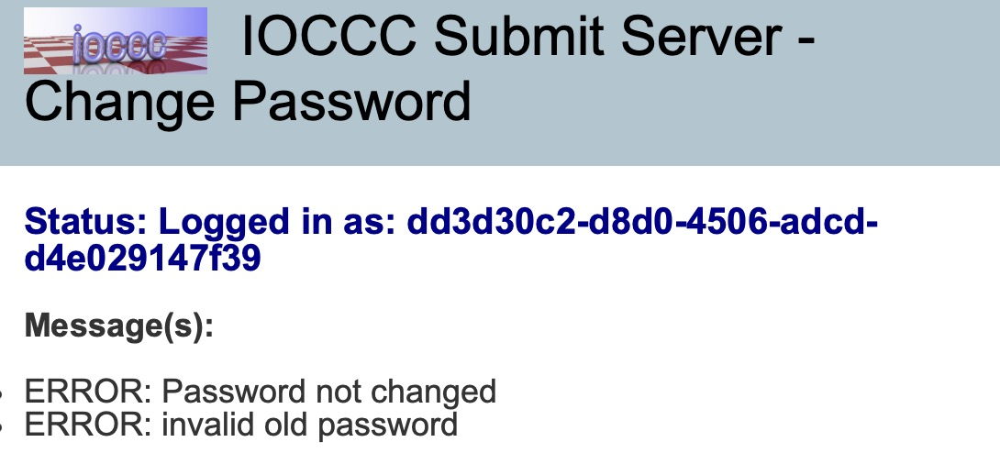
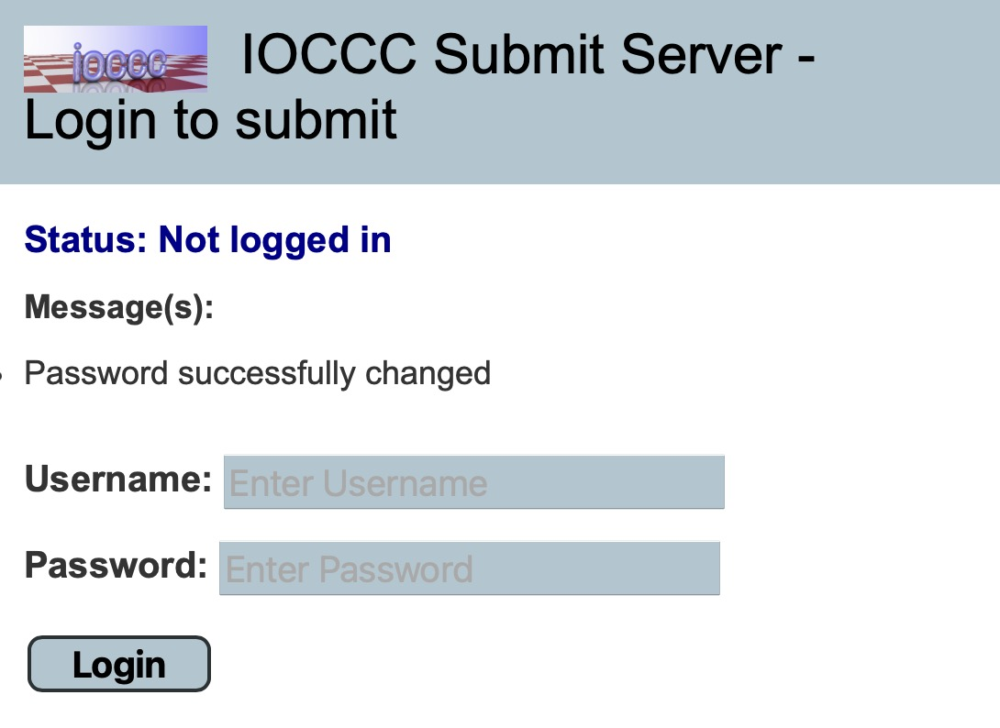

Change your submit server initial password
Using the Username and Initial password you receive via email in step 3, you need to login to the IOCCC submit server.
IMPORTANT NOTE: You must change your password WITHIN 72 HOURS from when one of the IOCCC judges sent that email.
NOTE: The IOCCC submit server will be ready for submissions ONLY WHEN THE CONTEST IS open. See current status of the IOCCC for details on the contest status.
IMPORTANT NOTE: When the contest is closed, the IOCCC submit server may be offline and unreachable as a website.
To login and change your password, open https://submit.ioccc.org in your browser. It should look like this:

The username is the UUID you are provided when a judge replies to your request to register for the IOCCC and the password is the initial password you are given. Click “Login”.
After you log in, if this is the first time you have logged in with this UUID, you will be required to change your password. Assuming everything is fine, that would look something like:

As you can see, on your first login you MUST change your password. If you do not do this within 72 hours YOUR ACCOUNT WILL BE CLOSED and you’ll have to register again!
Put in your login (UUID username), your old (initial) password and a new password.
Click “Change Password”.
NOTE: if you have put in your old password, you’ll see something like:

Once you’ve changed your password you will be able to log in again with your UUID username and new password. This is what it will look like when you change your password:

When the contest is open, proceed with Step 5: Obtain and compile the latest mkiocccentry toolkit.